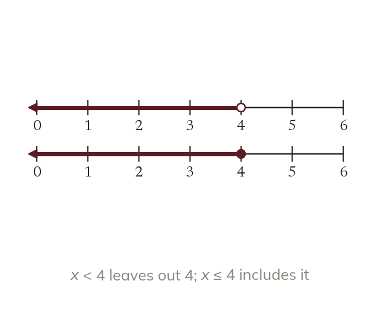

Four symbols
< means less than, and > means greater than. The symbols ≤ and ≥ include the value itself. So x ≤ 4 allows 4, but x < 4 does not.
The symbols < and > mean less than and greater than, while ≤ and ≥ include the value itself. So x ≤ 4 allows 4, but x < 4 does not.